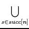

When we generated IR trees, we assumed that we have a very large number of temporary variables stored in registers. Of course this is not true for real machines. In particular CISC machines have very few registers (Pentium has 6 general registers only). So it's highly desirable to use one machine register for multiple temporary variables (instead of using one register for one temporary variable). Consider this program:
1. a := 0 2. L1: b := a+1 3. c := c+b 4. a := b*2 5. if a<10 goto L1 6. return cObviously we need a maximum of three registers, one for each variable
a, b, and c. But we can do better if we use
two registers: one for c and one for both a and
b. This is possible because after a+1 is computed in statement 2 and during statements 3 and 4, the
value of a is not used, and these are the only places where
b is used. We say that variables a and b do not
interfere if they are not live during the same periods in
the program. In that case, they can occupy the same
register. A variable x is live at a particular point
(statement) in a program, if it holds a value that may be needed in
the future. That is, x is live at a particular point if there is a path
(possibly following gotos) from this point to a statement that uses x and
there is no assignment to x in any statement in the path
(because if there was an assignment to x, the old value of
x is discarded before it is used). For example, a is
live in 2 (because it's the place where it is used), not live in 3 and 4
(because it is assigned a value in 4 before it is used in 5), and live
again in 5. Variable b is live in 3 and 4 only, and variable
c is live in 2, 3, 4, 5, and 6 (it's live in 2 because there is a path
to 3 where it is used). In general, let's say that you have a use
of a variable v in line n:
k. v := ...
...
n. x := ... v ..
(Here v is used in the source of an assignment but it may have also been
used in a function call, return statement, etc.) We try to find an
assignment v := ... such that there is path from this statement
to line n and there is no other assignment to v
along this path. In that case, we say that v is live
along this path (immediately after the asignment until and
including line n). We do that for every use of v
and the union of all these regions in which v is live gives
us the life of v. In our example, the life of variables are:
| a | b | c | |
| 1 | X | ||
| 2 | X | X | |
| 3 | X | X | |
| 4 | X | X | |
| 5 | X | X | |
| 6 | X |
Let's formalize the liveness of a variable. The first thing to do is to construct the control flow graph (CFG) of a program. The CFG nodes are individual statements (or maybe basic blocks) and the graph edges represent potential flow of control. The outgoing edges of a node n are succ[n] and the ingoing edges are pred[n]. For example, succ[5] = [6, 2] and pred[5] = [4]. For each CFG node n (a statement) we define use[n] to be all the variables used (read) in this statement and def[n] all the variables assigned a value (written) in this statement. For example, use[3] = [b, c] and def[3] = [c].
We say that variable v is live at a statement n if there is a path
in the CFG from this statement to a statement m such that
v  use[m] and for each
n k < m : v def[k]. That is, there
is no assignment to v in the path from n to m. For example,
use[m] and for each
n k < m : v def[k]. That is, there
is no assignment to v in the path from n to m. For example,
c is alive in 4 since it is used in 6 and there is no
assignment to c in the path from 4 to 6.
The liveness analysis analyzes a CFG to determine which places variables are live or not. It is a data flow analysis since it flows around the edges of the CFG information about variables (in this case information about the liveness of variables). For each CFG node n we derive two sets: in[n] (live-in) and out[n] (live-out). The set in[n] gives all variables that are live before the execution of statement n and out[n] gives all variables that are live after the execution of statement n. So the goal here is to compute these sets from the sets succ, use and def. To do this, we consider the properties of in and out:
| n : in[n] ;out[n] |
| n : |
| in'[n] in[n] |
| out'[n] out[n] |
| in[n] use[n] (out[n] - def[n]) |
| out[n] in[s] |
| in' = in out' = out |
The life of a variable can be directly derived from vector in:
if
v  in[n] then v is live on line n.
Then, from the variable lifes we can compute the interference graph.
The nodes of this graph are the program variables and for
each node v and w there is an interference edge if the lives of
the variables v and w overlap in at least one program point (statement). For each CFG
node n that assigns the value to the variable a (ie,
a
in[n] then v is live on line n.
Then, from the variable lifes we can compute the interference graph.
The nodes of this graph are the program variables and for
each node v and w there is an interference edge if the lives of
the variables v and w overlap in at least one program point (statement). For each CFG
node n that assigns the value to the variable a (ie,
a  def[n]) we add the edges
(a, b1), (a, b2),...,(a, bm), where
out[n] = {b1, b2,..., bm}. There is a special case when n is a
move command:
a c; in that case we do not add the edge
(a, bk) if bk = c. For example, the previous program
has an interference graph with three nodes:
def[n]) we add the edges
(a, b1), (a, b2),...,(a, bm), where
out[n] = {b1, b2,..., bm}. There is a special case when n is a
move command:
a c; in that case we do not add the edge
(a, bk) if bk = c. For example, the previous program
has an interference graph with three nodes: a, b, and c,
and two edges: a-c and b-c.
The following is a larger example:
| x | y | z | w | u | v | ||
| 1. | v := 1 | ||||||
| 2. | z := v+1 | X | |||||
| 3. | x := z * v | X | X | ||||
| 4. | y := x * 2 | X | X | ||||
| 5. | w := x+z * y | X | X | X | |||
| 6. | u := z+2 | X | X | X | |||
| 7. | v := u+w+y | X | X | X | |||
| 8. | return v * u | X | X |